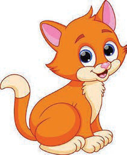
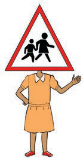
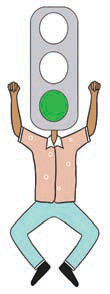

Chapter Two
Safety signs
I adhere to the road safety signs

I observe the road safety signs in order to be safe.
Activity 1
Perform a boasting to describe the uses of road safety signs.

A children’s crossing sign is held above a person standing with one hand out.
I am a children’s crossing sign. Use me to cross the road safely.

A traffic light character shows a green light and lifts both arms.
I am a green traffic light. When I turn on, I allow people, cars, motorcycles and bicycles to pass.
HEALTH AND ENVIRONMENT STD TWO 2 2024.indd 10
17/09/2025 12:11:09